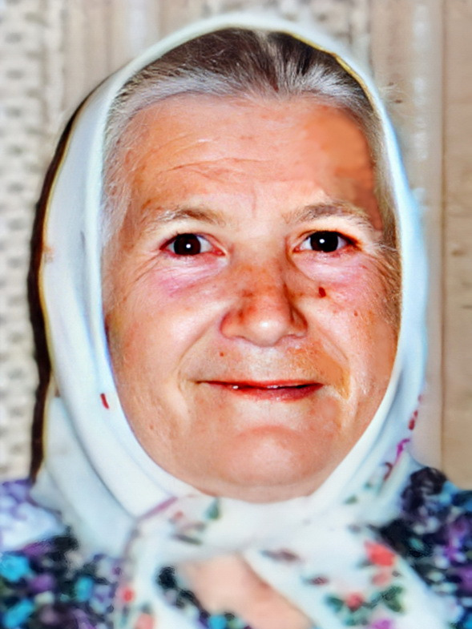

Дарья Андреевна Филимонова (Лоткова)

Девичья фамилия — Лоткова. Родилась 12 апреля 1920 г. в с. Краснояровка Борисоглебского уезда Тамбовской губернии (ныне Тамбовская области) в семье крестьян. По национальности русская. Была старшей из пятерых детей, а потому помогала матери в воспитании младших братьев и сестёр. Вероятно, как и большинство её сверстников, Дарья окончила три класса церковно-приходской школы, и уже в юном возрасте умела читать и писать.
Когда Дарье было около 20 лет, она впервые вышла замуж. Однако брак продлился недолго: началась война, муж был отправлен на фронт и вскоре убит. Детей у пары не было, однако Дарья какое-то время продолжала жить с родственниками погибшего мужа.
Затем некоторое время Дарья жила у родственницы в Донбассе, но уже вскоре перебралась в Подмосковье, где трудилась в совхозе птицефабрики в пос. Птичное. Не позже 1950 г. Дарья вышла замуж за Алексея Филимонова и поселилась в его доме — пятистенной избе, в которой за перегородкой жила родня мужа. На момент рождения старшего сына, Николая (1951), семья всё ещё жила в Ширяеве. А младшая дочь, Валентина (1958), родилась уже в соседней Поповке, где молодой семье предоставили земельный участок. Там супруги построили кирпичный дом, стоящий по сей день. Дети, внуки и даже правнуки Дарьи Андреевны теперь используют его как дачу.
Длительное время Дарья Андреевна работала на военно-ремонтном заводе вблизи пос. Птичное, обслуживая водонапорную башню. От постоянного шума оборудования с возрастом у неё возникли проблемы со слухом.
Помимо обычной работы, Дарья Андреевна, как очень деятельная женщина, вела хозяйство на земельном участке вокруг дома. В разное время семья держала коз, кур, уток и прочую живность, поэтому каждое лето заготавливалось сено. Земельный участок тоже регулярно обрабатывался. Круглый год велась торговля: Дарья Андреевна продавала козье молоко, зелень, клубнику, картофель. Для этого она регулярно ездила на рынок в Москву. Тяжёлый труд приносил неплохой заработок. В 1983 г. Дарья Андреевна внесла первый взнос на покупку московской квартиры для дочери. Но в экономически нестабильное время сбережения семьи, к сожалению, не раз сгорали. Летом в доме пожилых супругов постоянно находились дети и внуки. Все они помогали вести хозяйство.
По стечению обстоятельств Дарья Андреевна умерла в один день с супругом. Это случилось 14 июня 2000 г. в больнице города Апрелевка. Причиной смерти предположительно стало онкологическое заболевание. Ей было 80 лет. Похоронили их с мужем также в один день на кладбище в Поповке.